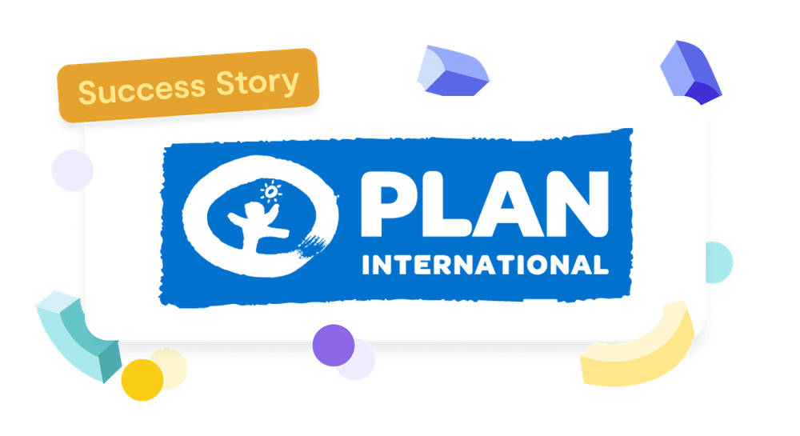

Business
5+ seats
Access for multiple team members within a tailored plan
Responsibility is taken seriously at non-profit organisations like Plan International not only towards children around the world, but also internally, towards their employees. Can strong values be reconciled with efficiency and limited resources? Plan International Germany e.V. shows how this can work.

Plan International e.V. is active as an independent children’s rights organisation in development cooperation and humanitarian aid in over 60 countries, with strong local structures, and is particularly committed to supporting girls and young women. Plan International Deutschland e.V. is a national organisation within this network. It is primarily responsible for fundraising, works closely with country offices to develop extensive projects, and, alongside its public relations work, advocates for development policy goals.
How do we want to work? A fundamental question. As a newly formed and dynamic team, there’s the advantage of being able to try out many things without being tied to existing structures.
These are the questions facing the people development team at Plan International Germany in Hamburg. Through experimentation and reflection, they’re finding their way towards a people-centred (and effective) way of working.
To gain insight into Plan International’s work with 9 Spaces, we spoke with Niklas Gaidetzka. He’s a specialist in personnel and organisational development in the People and Culture department at Plan International Germany. “We’re a small and ambitious team that wants to get a lot done and has great ideas about how we can change and improve the organisation from the inside,” Niklas explains. “There’s still so much we can build and shape together.” But where do you start?
First, they took stock of their requirements. This included:
Using the 9 Spaces workshop builder, a combination of the following tools emerged. Together, they create the processes needed to achieve these goals.
Tension-based work allows us to share ideas and inspiration with the team without hijacking meetings that are meant to serve a different purpose.Niklas Gaidetzka, Plan International e.V.
Role-based working gives us greater clarity and confidence about what’s expected from each role. The role profiles have also helped us better assess whether we have the resources to take on specific roles. Niklas Gaidetzka, Plan International e.V.
Working with OKRs has helped us a great deal to find clear, meaningful titles for projects while also clearly defining the results we want to achieve. This, in turn, supported us in shaping and structuring the sub-projects. Using the target visions as a reference, we were able to consider which intermediate steps are needed to reach those visions and objectives. Niklas Gaidetzka, Plan International e.V.
After extensive experimentation, reflection, and adaptation to Plan International Deutschland e.V., these collaboration methods became firmly embedded in Niklas’ team routines. Working independently, the group taught themselves how to work effectively with tensions, roles, and Objectives and Key Results (OKRs) — without any external input. Everyone knows how and where they can contribute best.
Using the Values Check gave us the opportunity to critically review our work (processes, services, initiatives, …) and assess whether — and to what extent — we already live up to our own standards. It also helped us develop great ideas for how to keep moving forward! Niklas Gaidetzka, Plan International e.V.
The large blank sheet titled “How do we want to work?” gradually filled up through the developments described above. Some approaches were crossed out, rewritten, or erased altogether. The final result is something to be proud of. The team was able to use existing 9 Spaces tools for their own purposes and integrate them sustainably into their processes — without having to reinvent the wheel. “Some of the methods even solve problems we didn’t realise we had before.”
With the new ways of working, they don’t just create greater clarity for themselves around strategy and project delivery, but also carry this clarity into other levels of the organisation. “OKRs helped us align better with our internal stakeholders, because this approach made it easier for them to understand what we want to achieve.”
Especially as an NGO, the constant presence of one’s own values is indispensable. The fact that these methods allow for — and actively encourage — continual refocusing supports the organisation in staying true to itself.
The modular system of workshop formats enabled Plan International Deutschland e.V. to find a tailored process that is as unique as the team itself. And we, too, take something away from this success story: creating processes that are grounded in a team’s specific constellation of needs and capabilities works best when it comes from within.
Access for multiple team members within a tailored plan